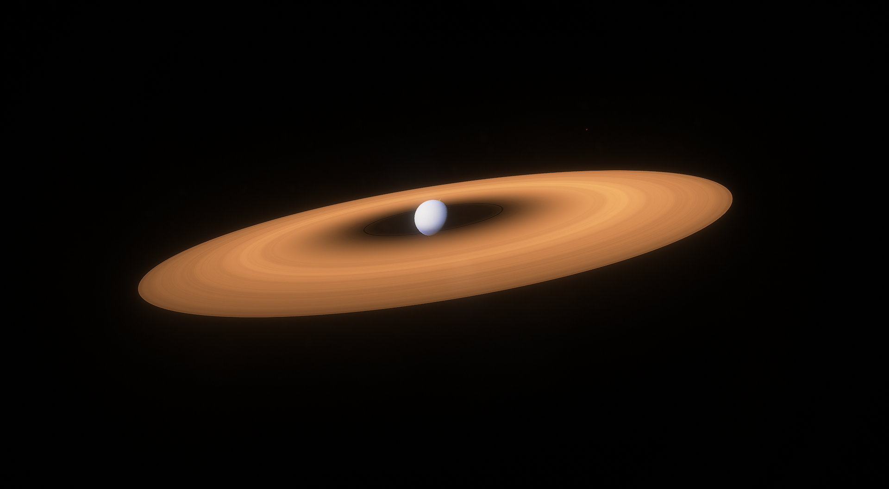

 Planet: Proxima Centauri C
Planet: Proxima Centauri C Distance from Sol: 4.24 light-years
Distance from Sol: 4.24 light-years Constellation: Centaurus
Constellation: Centaurus Classification: Frigid Subneptune
Classification: Frigid Subneptune Stations: 2, Refinery, Assembler
Stations: 2, Refinery, Assembler  Goverment: Centauri Autonomous Province, United LunaTerra protectorate
Goverment: Centauri Autonomous Province, United LunaTerra protectorate Characteristics:
Characteristics: